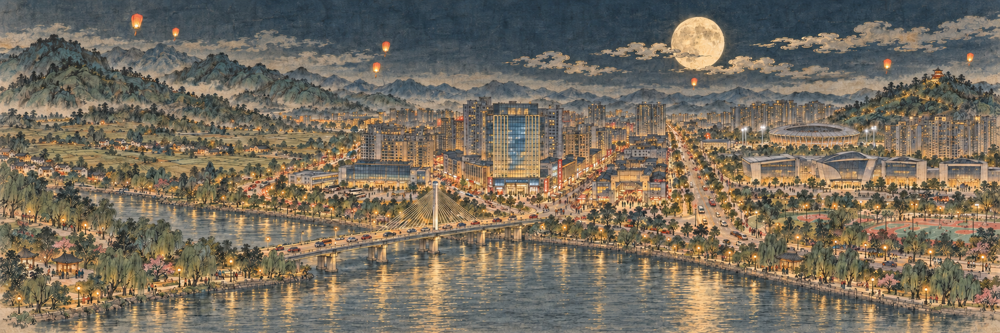

01
九连山郊野
02
上坪桃源
03
客家声腔
04
忠信花灯
05
元善滨河
06
连平新城
广 东 · 河 源 · 连 平
连平山河
移步游目 · 点景入画
入画人次
0001
♫
关闭音乐
九连山下 · 客家古邑 · 由山野行至新城
01
九连山郊野
02
上坪桃源
03
客家声腔
04
忠信花灯
05
元善滨河
06
连平新城
↶
全景
♫
入画人次
0001
连平 · 九连山
九连山郊野
▤
点击桃小鹰或画中地点互动 · 拖动画卷游览
‹
▶
›
☾
夜景
☂
时雨
⌕
◖
Ⅱ
⛶